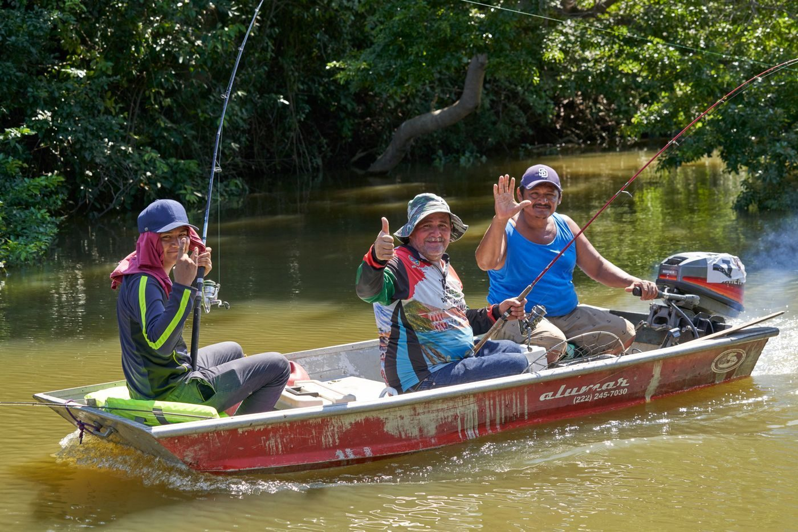
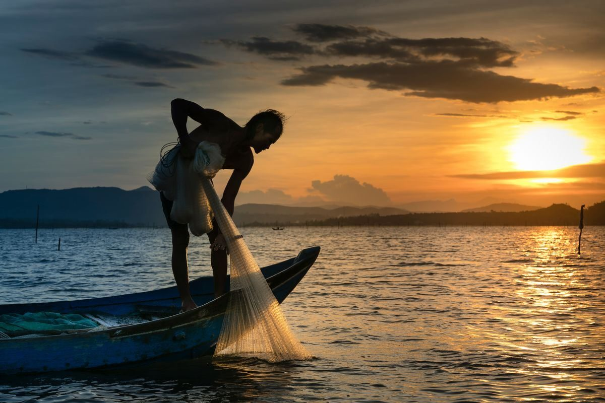
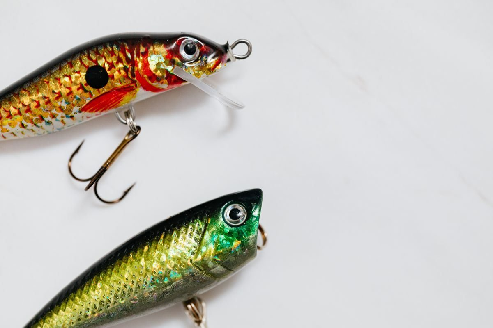

Go Topless Fishing Charters
Inshore and offshore fishing charters from Biloxi, with Capt. Matt Westover.
About
Go Topless Fishing Charters runs fishing charters from Biloxi, Mississippi, behind the Golden Nugget Casino. Capt. Matt Westover runs a 25 foot center console, and the boat, fuel, tackle, bait, ice, and licenses are included, with free fish cleaning.
Trips
Inshore charters
Inshore charters for redfish, speckled trout, flounder, and tripletail.
Offshore and deep-sea trips
Offshore trips for red snapper in season, sharks, cobia, and king mackerel.
Booze cruises
Booze cruises.
Family barrier-island day trips
Family day trips to the barrier islands.
Everything included
Boat, fuel, tackle, bait, ice, and licenses included, with free fish cleaning.
25 foot center console, Capt. Matt Westover
Trips run on a 25 foot center console with Capt. Matt Westover. Call (228) 217-3045 or email Matt@gotoplessfishing.com to ask about a trip.
Gallery


All gallery photos are stock photos, labeled as such. They show the kind of work and setting described on this page, not this business.
Visit
Address: 119 Beach Blvd, Biloxi, MS 39530
Hours: Daily 6:00 AM to 5:00 PM, per the listing. The own site posts no hours.
Phone: (228) 217-3045
Email: Matt@gotoplessfishing.com
Contact
Call (228) 217-3045 Email Matt@gotoplessfishing.com
Go Topless Fishing Charters serves Biloxi, MS. Questions? Call (228) 217-3045.